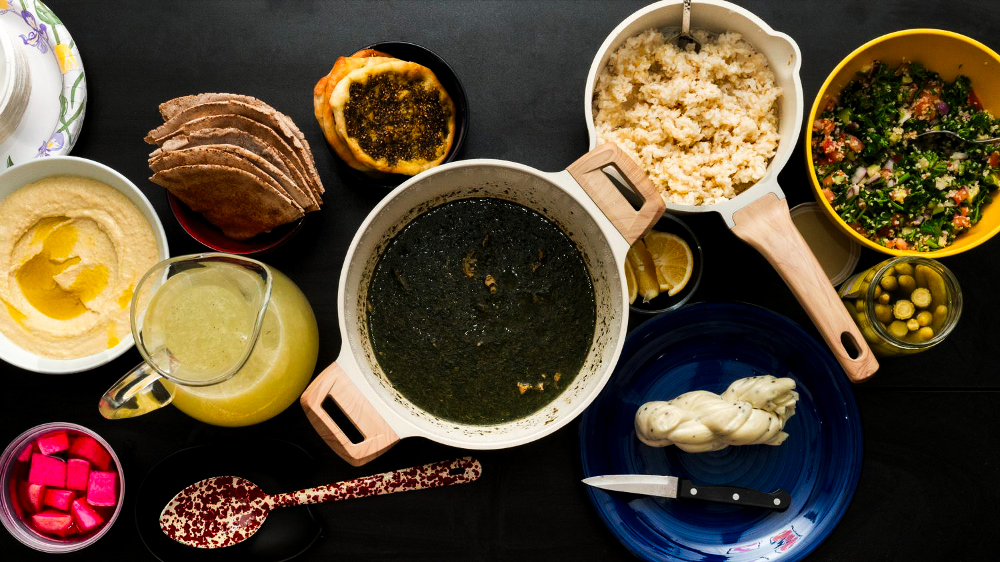

Join the table, no reservations needed!
Welcome to Opposition Kitchen, where the goal is to share recipes and slices of history from alternative perspectives, embracing the widespread experience and effects of diaspora, while giving recognition to the cause and effect.
This project is a continuation of my thesis zine and printwork,"I AM AN ARAB PIZZA"in which I explored my own personal identity politics as contextualized by contemporary society. This initial work emphasized my understanding on the importance of maintaining support on a local level as well as the true universality of food.
With easy accessibility and a continuation of investigating minority perspectives in mind, this project acts as a database for feeding the hungry minds within my online and creative communities.
Have any questions? Just wanna say hi?Drop a line!